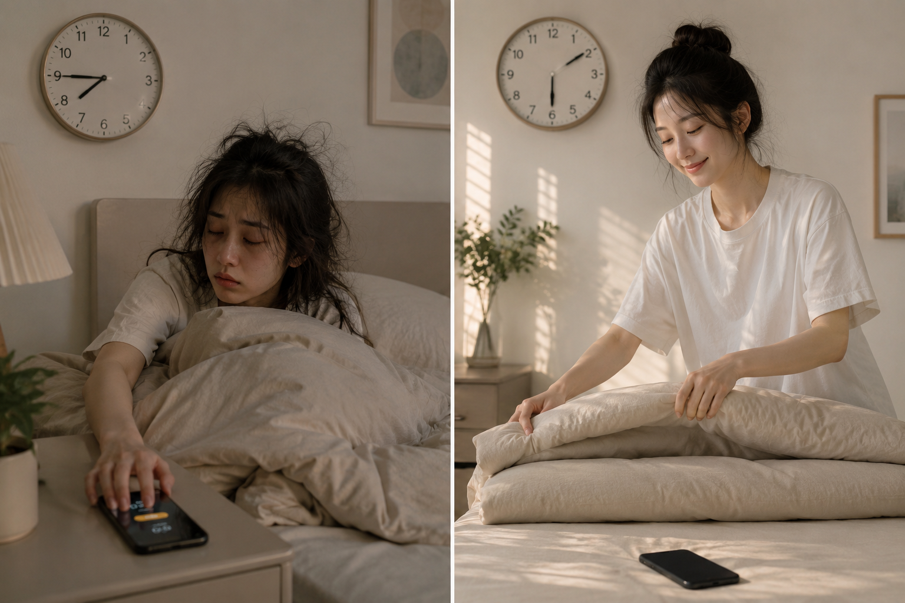

1.763.000đ
229.000đ
Dành cho người muốn ngủ ngon hơn, tự thức dậy tỉnh táo không cần báo thức và làm việc cả ngày không mệt mỏi
Ngay cả khi bạn đã mất ngủ nhiều năm, và đã thử đủ cách mà vẫn thất bại.

Đảm bảo hoàn tiền trong 30 ngày
Nếu bạn đã nằm rất lâu nhưng vẫn không thể ngủ vì có rất nhiều suy nghĩ không ngừng trong đầu
Thì đây chính xác là điều bạn cần đọc nhất thời điểm này, nó sẽ thay đổi hoàn toàn giấc ngủ và cuộc sống của bạn.
Nhưng cứ đến tầm chiều tối, bạn bắt đầu nhen nhóm một nỗi lo mơ hồ: "Liệu đêm nay mình có ngủ được không?".
Khi kim đồng hồ chỉ 2 - 3 giờ sáng, mọi người đều đã ngủ say, chỉ còn lại bạn với mớ suy nghĩ hỗn độn.
Đến gần sáng, khi cơ thể quá kiệt quệ, vào giấc được một chút thì lại đến giờ phải thức dậy đi học, đi làm. Sự bất lực này tạo ra một vòng lặp ức chế và bực bội cực độ.
Mình hiểu cảm giác đó.
Mình thức khuya ban đầu là vì tính chất công việc rồi dần thành thói quen. Ban ngày bù đầu vào công việc.
Buổi tối còn chút thời gian, mình xem phim, chơi game, lướt tik tok. Hơn 11h đêm mới tắm rửa lên giường. Nằm lướt tiếp tới 1, 2h sáng.
Sau khoảng 3 năm liên tục mất ngủ:
Khoảng thời gian này mình cảm thấy cực kỳ tồi tệ.
Thời điểm cuối 2025, vì chút mâu thuẫn nhỏ mà 2 vợ chồng mình cãi nhau. Anh ấy nói rất nhiều lời khiến mình cảm thấy bị tổn thương.
Cả đêm chỉ nằm khóc và suy nghĩ, mình không tài nào ngủ được dù rất mệt. Lúc vào rửa mặt, hình ảnh trong gương khiến mình nhìn đến thẫn thờ.
Hai mắt trũng sâu thâm quầng, toàn tơ máu đỏ quạch, khuôn mặt xám xịt chỉ còn sự mệt mỏi. Công việc trì trệ, hôn nhân rạn nứt.
Chính khoảnh khắc đó khiến mình nhận ra giấc ngủ đã ảnh hưởng đến cuộc sống của mình nhiều như thế nào.
Mình bắt đầu nghiêm túc tìm hiểu về giấc ngủ.
Và trong quá trình đó mình nhận ra một điều mà rất nhiều người không để ý:
Mỗi ngày chúng ta liên tục bị kích thích bởi thông tin, công việc và cảm xúc từ bên ngoài. Nhưng tới tối, thay vì dừng lại để não nghỉ ngơi, chúng ta lại tiếp tục lao vào mạng xã hội, video, tin tức và hàng trăm thông tin khác. Não bộ gần như chưa bao giờ thật sự được nghỉ.
Khi não đã quen với tần suất kích thích cao như vậy thì việc đi vào giấc ngủ tự nhiên sẽ trở nên rất khó.
Lúc đó mình mới hiểu rằng vấn đề của mình không đơn giản là khó ngủ, mà là não bộ đã bị "nghiện kích thích" trong một thời gian rất dài.
Và sự quá tải kích thích ban ngày với tình trạng mất ngủ ban đêm là "hai mặt của cùng một vấn đề". Chúng liên quan chặt chẽ với nhau theo một vòng lặp độc hại.
Sau đó mình bắt đầu thử từng chút một.
Ban đầu chỉ là mình bớt suy nghĩ linh tinh trước khi ngủ hơn
Rồi mình tắt đèn đi ngủ sớm hơn
Rồi vào giấc nhanh hơn
Mình ngủ sâu tới sáng
Khoảng hai tháng sau, chất lượng giấc ngủ của mình khác hoàn toàn trước đây.
Mình nhận ra là trước khi bộ não được làm dịu, mọi nỗ lực ép ngủ đều là công cốc.
Rồi mình bắt đầu chia sẻ những điều này với những người khác và họ cũng có những thay đổi tích cực.
Từ "không thể nhìn vào gương" đến mắt sáng trở lại, câu chuyện của chính mình.
Tác giả, 32 tuổi
Xuất phát điểm: 7 năm thức khuya vì công việc
Mình sống chung với mất ngủ cho đến khi sức khỏe suy kiệt, công việc trì trệ, hôn nhân rạn nứt mới lao vào tìm cách cứu vãn.
Mình bắt đầu với 2 phút đầu tiên.
Kết quả:
"Mình nhìn vào gương và thấy mắt mình đang dần sáng rõ. Cảm giác như trước kia luôn có một lớp sương mù, và mình đã lau sạch nó. Điều này làm mình hạnh phúc hơn tất cả, hơn cả việc tiệm có thêm khách hay hôn nhân cải thiện."
Câu mình nói sau 47 ngày
Cô Linh, 58 tuổi
Sức khỏe thể chất và tinh thần khá tốt, chỉ khó vào giấc, tỉnh 3-4 lần giữa đêm
Ban ngày ngủ gật nhưng nằm xuống lại không ngủ được và thường mơ những thứ đáng sợ.
Được hướng dẫn chỉ 1 bước thôi, sáng thêm từ 2 đến 10 phút.
"Tối không cần tắt điện thoại nữa, đến giờ là nằm xuống ngủ thôi, ngủ 1 mạch tới sáng luôn chứ bình thường là xem "tổng tài" 2, 3 giờ sáng."
Sau 7 ngày
Với người sức khỏe ổn như cô Linh, chỉ cần bắt đầu từ 1 đến 2 nghi thức là đủ thấy kết quả. Với người đang kiệt sức hơn, cả 4 bước sẽ hỗ trợ nhau và hiệu quả rõ hơn nhiều.
Bạn Sơn, 27 tuổi
Luôn trằn trọc 1, 2 giờ sáng, sáng dậy uể oải, lờ đờ
Bạn tâm sự rằng không có động lực để làm gì cả dù rất muốn thay đổi cuộc sống hiện tại.
"Ngủ dậy có tinh thần hơn, đi làm không thấy uể oải như trước, đi ngủ dễ vô giấc hơn."
Sau 7 ngày
Mình, cô Linh, và Sơn không phải những người có kỷ luật mạnh mẽ, không cần cày video động lực dài cả tiếng đồng hồ.
Và cả không cần 1 kế hoạch to lớn.
Chỉ bắt đầu với vài phút và mọi thứ thay đổi.
Nếu mình, cô Linh, Sơn, làm được, liệu bạn có làm được không?
Mình tạo ra hệ thống này vì mình biết có rất nhiều người đang ở đúng chỗ mình từng ở.
Mệt mỏi, stress mỗi ngày, trằn trọc hàng đêm rồi sáng thức dậy trong vật vã, và dù cố thử nhiều cách rồi nhưng đều chẳng ăn thua.
Không phải bạn thiếu ý chí đâu.
Câu trả lời là bạn chưa chạm tới công tắc giúp não được nghỉ ngơi.
Mình chỉ cho bạn đúng công tắc đó, bạn chỉ cần gạt nó lên thôi.
Đây không phải viễn cảnh xa vời.
Nó cũng không phải là điều kỳ diệu mang tính tâm linh
Mà là khi "hệ thống làm dịu" được bật lên, một sự tái cấu trúc sinh học và hóa học bên trong bộ não của bạn cũng tự khởi động.
Bạn đã vô tình kích hoạt chế độ "vận hành tối ưu" của cơ thể mà không cần hiểu sâu về nó.
Bạn đã bị "đồng hóa" với sự kích thích liên tục.
Do thói quen lướt điện thoại từ sáng đến đêm, xem phim, chơi game, check thông báo... bạn đã vô tình huấn luyện cho não bộ của mình một thói quen, cứ mỗi 5-10 giây là phải có một thông tin mới nạp vào.
Đây không phải vấn đề của ý chí.
Cũng không phải vì bạn lười.
Mà vì não bạn chưa bao giờ nhận được tín hiệu an toàn.
Và khi chưa dừng được trạng thái kích thích liên tục đó, uống trà thảo mộc, nghe nhạc thiền, cố ngủ sớm, lập thời gian biểu, tất cả đều thất bại.
Không phải vì những thứ đó sai.
Mà vì chúng đang giải quyết phần ngọn trong khi gốc rễ chưa được chạm tới.
Đây là điểm mà Hệ Thống Hồi Phục Năng Lượng khác.
Đây là hệ thống 4 bước đơn giản, mỗi cái chỉ 2 – 5 phút được thiết kế để đưa tâm trí ra khỏi trạng thái căng thẳng liên tục và giúp cơ thể bắt đầu hồi phục từ bên trong.
Bạn sẽ biết cách cho bộ não khởi động từ từ và tắt chế độ "Báo động" (Cortisol)
Khi bạn không kích động hệ thần kinh từ sáng, bạn sẽ ít tích tụ áp lực hơn. Đến đêm, cơ thể không bị rơi vào trạng thái tỉnh táo giả tạo nên dễ đi vào giấc ngủ.
Nếu bỏ qua bước này: bạn tiếp tục nằm xuống mà không ngủ được, tiếp tục thức đến 1 – 2 giờ sáng và hôm sau lại bắt đầu với cơ thể chưa hồi phục.
Bí mật này giải quyết thứ phá hỏng ban ngày: Hành động này giữ cho não ở mức vừa đủ để tỉnh táo, chứ không biến thành sự hoảng loạn hay quá tải suy nghĩ.
Bạn sẽ biết cách tạo khoảng lặng thật sự cho đầu óc ngay giữa ngày làm việc, ngay trong lúc ăn trưa, ngay cả khi chỉ có 5 phút.
Giúp cơ thể nhận biết rõ ràng "đây là ban ngày", từ đó sẽ tự động kích hoạt chế độ "đây là ban đêm" một cách chính xác hơn khi đến giờ ngủ, giúp bạn ngủ sâu giấc hơn.
Nếu bỏ qua bí mật này: bạn tiếp tục cảm giác lo âu, bồn chồn cả ngày mà không giải quyết được bao nhiêu, và nghỉ xong vẫn không thấy nạp lại được năng lượng.
Bí mật này giúp não bộ thoát khỏi trạng thái hoang mang, vô định (nguyên nhân khiến bạn thèm lướt điện thoại hay mua sắm vô bổ)
Khi bạn viết xuống và gạch đi một việc đã hoàn thành, não bạn sẽ tiết ra một lượng Dopamine vừa phải kèm theo cảm giác tự hào và năng lực kiểm soát cuộc sống.
Nó giúp não thích nghi với việc "thỏa mãn từ hành động có ích" thay vì "thỏa mãn lười biếng từ màn hình".
Bạn sẽ không còn cảm giác bứt rứt vì "nợ công việc".
Bạn bước lên giường với tâm thế của một người chiến thắng, không còn những suy nghĩ lo âu, cắt đứt chuỗi suy nghĩ miên man ban đêm.
Cảm giác đó tích lũy. Và dần dần, bạn bắt đầu giành lại khả năng kiểm soát cuộc sống của mình.
Ba bí mật này không cần ý chí lớn để thực hiện. Không cần thay đổi toàn bộ lịch sinh hoạt. Không cần hoàn hảo từ ngày đầu.
Chỉ cần 4 bước nhỏ, 2 – 5 phút, thực hiện đúng thứ tự và cơ thể bạn sẽ tự biết cách phục hồi.
Nó sẽ là chiếc mỏ neo giữ cho tâm trí bạn bình yên giữa một thế giới quá nhiều cám dỗ.
Từ ngày 30+: vào giấc dễ dàng, đôi mắt sáng hơn, khuôn mặt nhẹ hơn, người xung quanh thay đổi cách đối xử mà không ai được thông báo gì. Làm cả ngày không mệt. Tối vẫn còn năng lượng.
Có thể bạn đang:
Đúng không?
Mình hiểu cảm giác đó.
Vì mình cũng từng ở đó.
Và mình biết chắc: vấn đề không phải ý chí của bạn.
Không phải tính cách của bạn.
Thứ bạn cần không phải thêm thông tin, không phải thêm kỷ luật mà là một hệ thống đơn giản mà hiệu quả đủ để cơ thể tự hồi phục.
Hệ thống này được thiết kế đơn giản, bạn chỉ cần 2 phút cho mỗi việc là đủ để nhận được kết quả.
Sau 14 ngày, bạn sẽ có: ngủ sâu, sáng dậy tỉnh táo, năng lượng dồi dào cả ngày, cảm giác tự hào và năng lực kiểm soát cuộc sống.
Dưới đây là toàn bộ những gì bạn sẽ nhận được
Tầng 1 — Hạ nhiệt
Cứu bộ não khỏi cú sốc "Dopamine giá rẻ"
Ở tầng này, ta sẽ tập trung làm dịu tâm trí, đưa não về tần số thư giãn và tỉnh táo.
Bạn sẽ học được cách:
Chỉ 2 ngày đầu tiên, bạn sẽ không còn trằn trọc với cả đống suy nghĩ ngổn ngang mỗi lần nhắm mắt lại.
Tầng 2 — Đánh thức năng lượng vật lý
Khi mới ngủ dậy, não bộ còn bị bao phủ bởi một làn sương mù gọi là quán tính giấc ngủ (Sleep Inertia). Ta sẽ cần phát ra tín hiệu vật lý mạnh mẽ đến tâm trí: "Ngày mới bắt đầu rồi, thức dậy thôi!".
Điều bạn nhận được sau tầng này:
Từ ngày 3 - 5, cảm giác lờ đờ, ngái ngủ do (hormone melatonin còn sót lại) được phá tan.
Tầng 3 — Gặt hái chiến thắng bằng "Sự thỏa mãn lành mạnh"
Bạn sẽ biết cách quản trị mục tiêu và kiểm soát Dopamine lành mạnh.
Điều bạn nhận được:
Từ ngày 5 trở đi, bạn sẽ chủ động đi ngủ sớm vì không còn bị môi trường xung quanh kích thích. Sáng bạn thức dậy trước cả báo thức nhờ giấc ngủ sâu tối hôm trước.
Tầng 4 — Định hướng tâm trí — cài hệ điều hành mới
Ta sẽ cắm một cái đích đến rõ ràng trên bản đồ bạn đang đi đến. Khi não bộ nhìn thấy cái đích đó, nó sẽ tự động kích thích động lực, sự tập trung và kiên trì để bạn hành động trong ngày, thay vì để bạn lọt vào những cái bẫy tiêu khiển vô bổ.
Sau tầng này, bạn sẽ biết cách:
Sau ngày 7, bạn sẽ giảm bớt sự nhạy cảm với các drama hay năng lượng độc hại. Trạng thái dồi dào năng lượng mạnh mẽ nhất từ ngày này.
4 tầng này hoạt động đồng thời và hỗ trợ lẫn nhau. Đưa cơ thể và tâm trí về trạng thái "vận hành tối ưu" bằng con đường ngắn nhất.
Quan trọng nhất, bạn không cần trở thành 1 chuyên gia thần kinh học
Bạn chỉ cần làm đúng 4 bước nhỏ — chỉ cần 2 phút để hoàn thành, không cần động não — mà mình đã đóng gói ở đây.
Chưa hết!
Bonus 1 — Template: Người đồng hành không phán xét
| Nội dung | "Cách dùng AI làm người đồng hành, không phán xét, không bỏ cuộc, luôn ở đó khi bạn cần". Mình đã prompt sẵn, bạn chỉ cần sao chép và dán. |
| Kèm theo | Bảng theo dõi 4 bước, đánh dấu mỗi ngày, tạo giao kèo với người đồng hành. |
| Giá trị | 129.000đMIỄN PHÍ |
Bonus 2 — Template Chiến thuật "Chiến thắng sớm"
| Nội dung | Format cụ thể: việc gì, tại sao, làm như thế nào. |
| Kèm theo | Hướng dẫn xử lý khi bị lệch nhịp và kế hoạch ứng phó cho 5 tình huống hay xảy ra nhất. Cách rút ngắn còn 8 phút, để không có lý do nào để bỏ. |
| Giá trị | 129.000đMIỄN PHÍ |
Bonus 3 — 3 tháng tham gia nhóm hỗ trợ
| Nội dung | Nơi bạn báo cáo tiến trình mỗi ngày, đặt câu hỏi khi gặp khó khăn, và nhìn thấy những người giống mình cũng đang thay đổi. |
| Tại sao | Vì duy trì một mình rất khó, nhưng duy trì cùng người khác thì khác hẳn. |
| Giá trị | Vô giá |
Bonus 4 — File Tiến trình cá nhân hóa
| Nội dung | Bạn sẽ được hướng dẫn cách làm phù hợp với thời gian của mình. |
| Kèm theo | Cách để tự kiểm tra được tiến bộ nhỏ mỗi ngày và bắt đầu dám nói không với những thứ lấy đi năng lượng của bạn. |
| Giá trị | 229.000đMIỄN PHÍ |
Bonus 5 — Cập nhật miễn phí
| Nội dung | Mỗi khi có điều chỉnh mới trong lộ trình, bạn được access miễn phí. |
| Giá trị | Vô giá |
TỔNG GIÁ TRỊ: 3.515.000 đ
Nhưng hôm nay, bạn chỉ cần đầu tư:
229.000đ
Tiết kiệm ngay 3.286.000 đ
📈 Lộ trình sẽ sớm tăng giá
Đây chỉ là giá ưu đãi đặc biệt dành cho đợt ra mắt. Sau khi đủ số lượng, giá sẽ tăng dần về giá gốc để đảm bảo chất lượng đầu vào và sự hỗ trợ tốt nhất cho từng người tham gia.
Vì đây là đợt mở bán đầu tiên, mình muốn lấy phản hồi thật từ những người đầu tiên tham gia, và mình biết khi có người thật sự thay đổi, câu chuyện của họ còn có giá trị hơn bất kỳ chiến dịch quảng cáo nào. Sau đợt beta, mức giá sẽ tăng dần theo từng đợt.
🛡️ CAM KẾT HOÀN TIỀN 100%
Mình tin tưởng tuyệt đối vào hệ thống này — và mình muốn bạn cũng có niềm tin đó khi bước vào.
Vì vậy, mình cam kết đảm bảo hoàn tiền trong 30 ngày.
Nếu bạn thực sự áp dụng hệ thống và:
Nhưng sau đó vẫn không thấy bất kỳ thay đổi nào về giấc ngủ và năng lượng — chỉ cần nhắn tin về email kelangthang9494@gmail.com với tiêu đề "Yêu cầu hoàn tiền", mình sẽ xử lý ngay.
Mình sẽ vui vẻ hoàn lại tiền — và bạn vẫn được giữ toàn bộ tài liệu đã nhận được, như một lời cảm ơn vì đã dành thời gian trải nghiệm.
Có thể bạn chưa bao giờ cộng lại nhưng nó đang tốn của bạn nhiều hơn bạn nghĩ, mỗi tháng, đều đặn.
Và còn chưa tính những thứ không đo được bằng tiền:
Hầu hết mọi người tiếp tục trả những khoản đó mỗi tháng vì họ đang xử lý triệu chứng, không phải gốc rễ.
Tiếp tục như hiện tại
Bắt đầu tối nay
Cam kết hoàn tiền 100% trong 30 ngày nếu bạn làm đủ và không thấy thay đổi.
Vì thứ bạn cần không phải thêm ý chí. Chỉ là lần đầu tiên, để cơ thể được phép thật sự nghỉ ngơi.